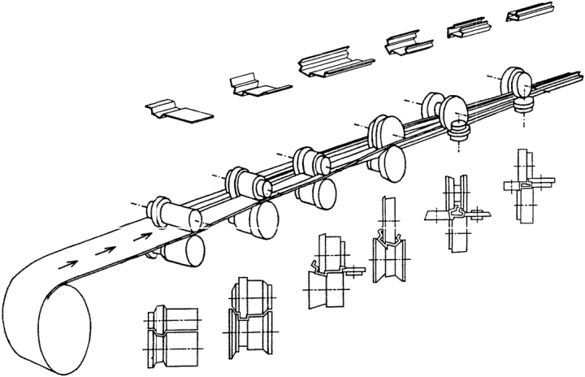
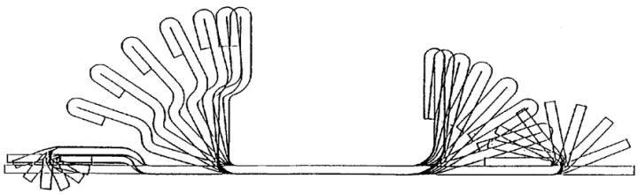

|
Doç. Dr. Haydar Livatyalý
Makine Müh. Böl., Makine Malz. ve Ýmalat Tek. A.B.D.
Ýstanbul Teknik Üniversitesi
Þubat 2006, Ýstanbul
Not: Orijinal olarak TurkCADCAM.net Dergisi 2. Sayýsý için hazýrlanmýþ bu makale, Aðustos 2006'da MakinaTek Dergisi'nde, Mart 2007'de TurkCADCAM.net Portalý'nda yayýnlanmýþtýr.
Her gün yeni bir teknolojik terimin üretildiði ve piyasaya sürüldüðü bir dönemde yaþýyoruz. Öyle ki çoðunluðu Ýngilizce olarak ortaya atýlan yeni terim ve kavramlarý anlayýp, kapsam alanýný belirleyip, içselleþtirip, Türkçeleþtiremeden yenileri çýkmakta ve takip etmekte son derece zorlanmaktayýz. Yeni olmasa da tam Türkçe karþýlýðýný bulamadýðýmýz kavramlardan biri de Ýngilizcede "roll forming" olarak anýlan makaralar veya merdaneler kullanýlarak sac þeritten (dikiþli) boru, tüp, kapalý veya açýk profil bükme iþlemidir. Bu iþlem sac þerit kalýnlýðýnda bir deðiþikliðe yol açmadýðý için haddelemeden (rolling), genellikle düz parçalar yapýmýnda kullanýldýðý için de silindir makinasýnda kývýrma (roll bending) iþlemlerinden farklýdýr (Þekil 1). Türkçede yerleþmiþ ve yaygýn kabul görmüþ bir terim bulunmadýðý için bu yazýmýzda piyasada yaygýn kullanýlan "roll form" terimini tercih edeceðiz.

Þekil 1: Tipik bir açýk profil örneðinde roll form iþleminin þematik gösterimi
Roll form teknolojisi "yeni" veya "ileri" þeklinde niteleyemeyeceðimiz kadar "eski" teknoloji. Ýlk kullanýmý iki Dünya savaþý arasýna denk düþüyor, ancak sac ve þerit metallerin kalitesi iyileþip üretimi arttýkça bu teknolojinin kullanýmý da giderek artýyor. Esas olarak sabit kesitli ve kalýnlýklý tüp, boru ve profillerin [1] yüksek hacimde imalatý için geliþtirilmiþ bu yöntem baþka iþlemlerle bir arada kullanýlarak beyaz eþya gövdelerinden [2] çelik kapý ve kasalarýna [3], özel paslanmaz çelik mobilya profillerinden [4] mobilya ray ve kýzaklarýna [5] ve depolama raflarý ve ayaklarýndan çatý (kaplama) panellerine [6] kadar çok geniþ bir kullaným alaný buluyor. Bununla da kalmayýp gelecekte yaygýnlaþmasý beklenen uygulamalarýnda bilgisayar denetimli makara eksen kontrolü ile sadece sabit kesitli deðil, deðiþken kesitli açýk profillerin imalatýnda da kullanýmý mümkün.
Roll form iþlemini cazip kýlan en önemli avantajlar arasýnda yüksek üretim hacmi, düþük iþgücü kullanýmý, pek çok iþlemle bir arada kullanýlabilirlik, yüksek yüzey kalitesi ve düþük boyutsal toleranslar, çok sert veya sünekliði düþük metallerin artýrýmlý bir süreç içinde baþarý ile þekillendirilebilmesi, boyalý, metal, polimer vb. kaplamalý sac levhalarýn iþlenebilmesi ilk akla gelenler. Temel kýsýtlamalar ise göreceli olarak yüksek makine ve makara (merdane, röle) yatýrýmý, sabit parça kesiti ve cidar kalýnlýðý ve geometrik karmaþýklýk arttýkça artan paso sayýsý sebebiyle uzunlamasýna büyüyen makine sayýlabilir. Sonuç olarak son on yýlda Almanya'da çelik tüketimi istikrarlý biçimde azalýrken roll form yöntemi ile imal edilen ürünlerin kilo cinsinden miktarý sürekli artmaktadýr.
Tablo 1: Geleneksel roll form tezgâhlarýnýn çalýþma aralýðý
| Þerit Geniþliði (mm) |
5 - 2.000 |
Þerit Kalýnlýðý (mm) |
0,15 - 10 |
Kesit toleransý (mm) |
±0.38 |
Açý toleransý |
±1 - 2° |
Hat hýzý (m/dk) |
30 - 100 |
| Üretim hacmi (m/8 saat) |
7600 - 12200 |
Bu teknolojinin en kritik yönü proses ve dolayýsýyla makara tasarýmýdýr. Roll form iþlem adýmlarýnýn tasarýmý çiçek þemasý (flower diagram) adý verilen bütün bükme pasolarýnýn üst üste gösterildiði bir þekil üzerinde geliþtirilir (Þekil 2). Çiçek þemasý elle veya bir bilgisayar destekli tasarým (BDT) programý kullanýlarak çizilebilir. BDT programlarýnýn sanayide günlük kullanýmýnýn baþladýðý ilk zamanlardan beri roll form makaralarýnýn tasarýmýnda kullanýlmýþtýr. Amerika ve Avrupa'da pek çok makine-makara yapýmcýsý kendilerine özel proses ve makara tasarým programlarý geliþtirmiþler veya yazýlým firmalarý ile anlaþarak yaptýrmýþlardýr.

Þekil 2: Bir açýk profil ve boru imalatýnda kullanýlan iki örnek çiçek þemasý
|